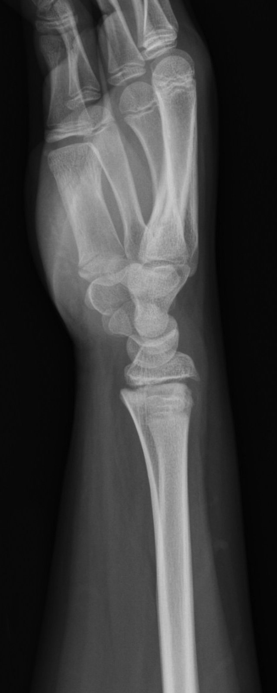
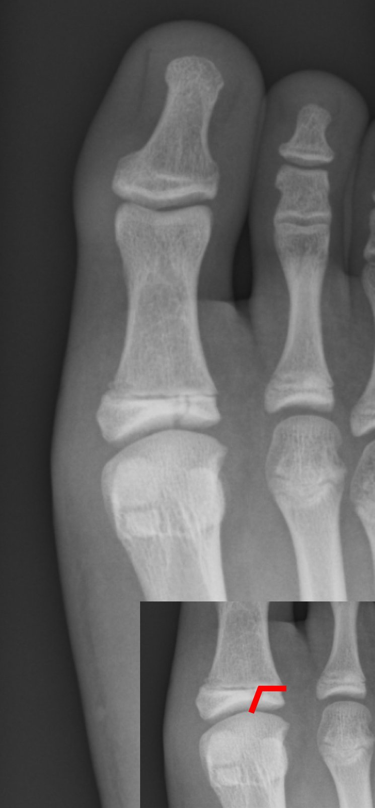
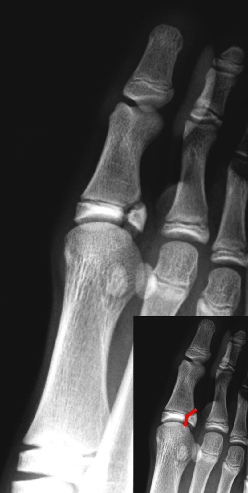
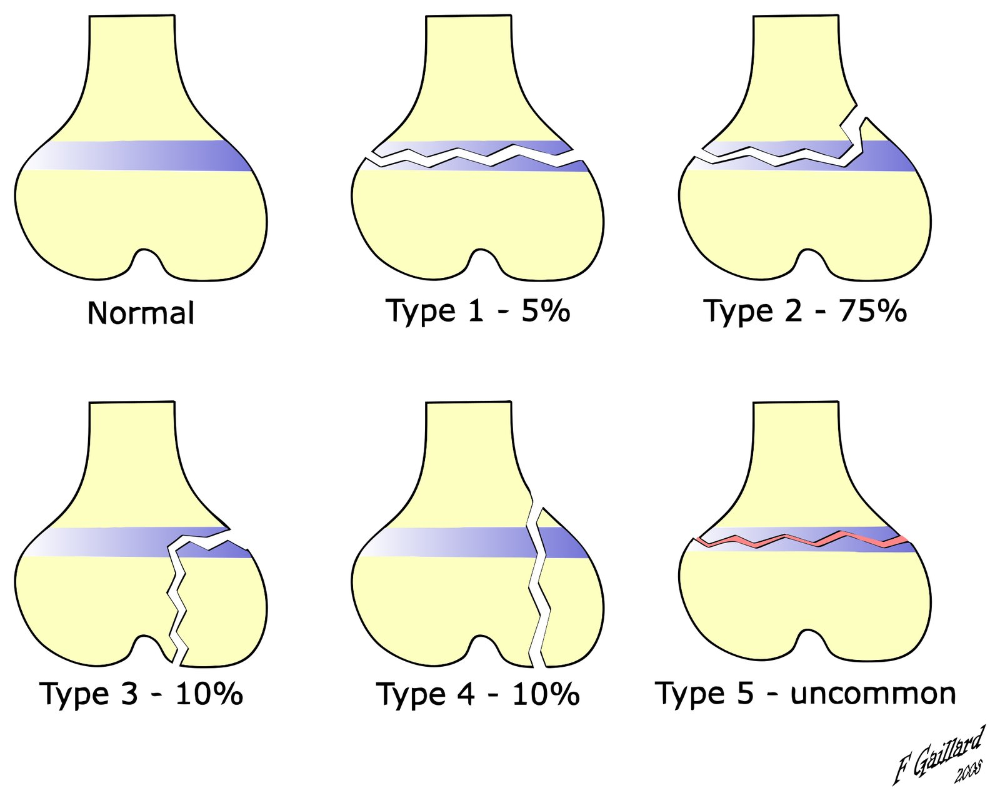
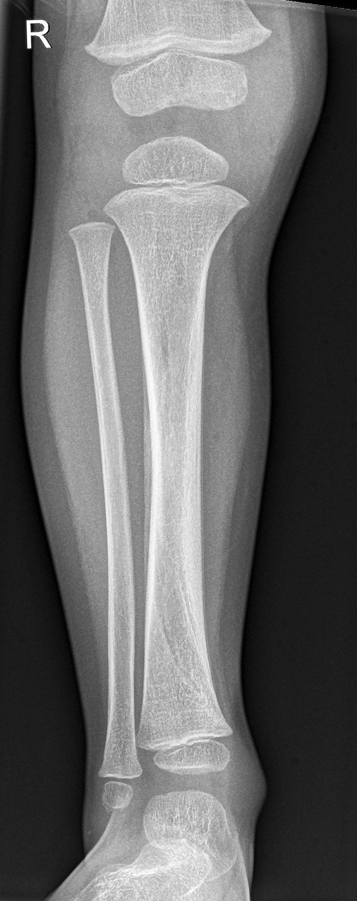

Case courtesy of Ryan Thibodeau, Radiopaedia.org, rID: 216815 · CC BY-NC-SA 3.0
Lucency منطقة شفافة
Sclerosis تصلّب
Sclerosis تصلّب
Extends into tibial epiphysis يمتد إلى مشاشة الظنبوب
الحالة: خرّاج محصور داخل العظم، غالباً بالقرب من نهاية عظم طويل عند الأطفال، ويسبب ألماً مستمراً.
علامتها بالأشعة: منطقة شفافة (lucency) محددة بوضوح ومحاطة بحافة متصلبة (sclerosis) في الكُردوس (metaphysis)، وقد تعبر صفيحة النمو إلى المشاشة (epiphysis).
الوضعية: Knee AP
🟢 صورة ركبة طبيعية (أمامية خلفية) Normal knee X-ray (AP)
Case courtesy of Leonardo Lustosa, Radiopaedia.org, rID: 160105 · CC BY-NC-SA 3.0
الحالة: انزلاق مشاشة رأس الفخذ (capital epiphysis) عن العنق، يصيب المراهقين خاصة الذكور البدينين.
علامتها بالأشعة: اتساع وعدم انتظام صفيحة النموّ (physis)، وخطّ كلاين (Klein line) على الحافة العليا للعنق لا يقطع المشاشة أو يقطع جزءاً صغيراً منها فقط.
Case courtesy of Leonardo Lustosa, Radiopaedia.org, rID: 207554 · CC BY-NC-SA 3.0
الحالة: أشيع ورم خبيث أولي في العظم عند المراهقين، غالباً حول الركبة في كُردوس (metaphysis) الفخذ أو الظنبوب.
علامتها بالأشعة: آفة مختلطة غير محددة في الطرف السفلي للفخذ مع تفاعل سمحاقي (periosteal reaction) على شكل أشعة الشمس (sunburst) وعلى شكل طبقات (lamellar)؛ والمصدر يذكر أيضاً مثلث كودمان (Codman triangle).
الوضعية: Femur lateral
🟢 صورة فخذ طبيعية (جانبية، النصف العلوي) Normal femur X-ray (lateral, proximal half)
Case courtesy of Piotr Gołofit, Radiopaedia.org, rID: 53033 · CC BY-NC-SA 3.0
Case courtesy of Leonardo Lustosa, Radiopaedia.org, rID: 231652 · CC BY-NC-SA 3.0
الحالة: ورم خبيث في العظم يصيب الأطفال واليافعين، غالباً في العظام الطويلة أو الحوض.
علامتها بالأشعة: آفة نافذة (permeative) غير محددة في الطرف العلوي للعضد، مع تفاعل سمحاقي متعدد الطبقات يشبه قشر البصل (onion skin) ومثلث كودمان (Codman triangle).
الوضعية: Humerus lateral (zoomed)
🟢 صورة عضد طبيعية (جانبية) Normal humerus X-ray (lateral)
Case courtesy of Piotr Gołofit, Radiopaedia.org, rID: 53034 · CC BY-NC-SA 3.0
Non-ossifying fibromaالورم الليفي غير المتعظّم⚫ Bone tumours & lesions · أورام وآفات العظمصورة طفل
Case courtesy of Angela Byrne, Radiopaedia.org, rID: 8111 · CC BY-NC-SA 3.0
الحالة: آفة حميدة شائعة جداً عند الأطفال والمراهقين حول الركبة، غالباً تُكتشف صدفة ولا تحتاج تدخلاً.
علامتها بالأشعة: آفة شفافة بيضوية متعددة الفصوص في قشرة الكُردوس (metaphysis) بحافة متصلبة رقيقة، بدون تفاعل سمحاقي.
الوضعية: Distal femur AP
🟢 صورة ركبة طبيعية (أمامية خلفية) Normal knee X-ray (AP)
الحالة: نقص فيتامين د عند الطفل يمنع تكلّس صفائح النمو، فتتسع وتلين أطراف العظام.
علامتها بالأشعة: اتساع صفيحة النمو مع تقعّر (cupping) وتشرشُر (fraying) حافة الكُردوس في الكعبرة والزند عند الرسغ.
الوضعية: Wrist X-ray
🟢 يد طفل طبيعية (4 سنوات) — صفائح النمو Normal child hand (4 years) — growth plates
Case courtesy of Magdi Mahsoub, Radiopaedia.org, rID: 218245 · CC BY-NC-SA 3.0
🧒 Paediatrics الأطفال
Salter-Harris type I fractureكسر سالتر-هاريس النوع الأول🧒 Paediatrics · الأطفال

Case courtesy of Frank Gaillard, Radiopaedia.org, rID: 7207 · CC BY-NC-SA 3.0
الحالة: كسر يمرّ عبر صفيحة النمو (physis) فقط، فينفصل المشاش (epiphysis) عن الكُردوس (metaphysis) دون كسر في العظم نفسه.
علامتها بالأشعة: اتساع صفيحة النمو أو انزياح بسيط للمشاش؛ قد تبدو الصورة شبه طبيعية، لذا قارن بالطرف الآخر. الخطّ الأحمر من المصدر يحدد الصفيحة المصابة.
الوضعية: Wrist lateral
🟢 يد طفل طبيعية (4 سنوات) — صفائح النمو Normal child hand (4 years) — growth plates
Case courtesy of Magdi Mahsoub, Radiopaedia.org, rID: 218245 · CC BY-NC-SA 3.0
Osteogenesis imperfecta (newborn)تكوّن العظم الناقص (العظم الزجاجي) عند حديث الولادة🧒 Paediatrics · الأطفالصورة طفل
الحالة: أشيع كسور صفيحة النمو: يمرّ الكسر في الصفيحة ثم يصعد عبر الكُردوس (metaphysis).
علامتها بالأشعة: قطعة مثلثة صغيرة من الكُردوس تبقى ملتصقة بالمشاش (Thurstan Holland fragment)، مع انزياح المشاش، وتظهر أوضح في الصورة الجانبية.
الوضعية: Wrist X-ray (2 views)
🟢 يد طفل طبيعية (4 سنوات) — صفائح النمو Normal child hand (4 years) — growth plates
Case courtesy of Magdi Mahsoub, Radiopaedia.org, rID: 218245 · CC BY-NC-SA 3.0
Salter-Harris type III fractureكسر سالتر-هاريس النوع الثالث🧒 Paediatrics · الأطفال

Gilo1969 · CC BY 3.0 · Wikimedia Commonsالعلامة المرسومة على الصورة من المصدر.
الحالة: كسر يمرّ في صفيحة النمو ثم ينزل عبر المشاش (epiphysis) إلى سطح المفصل.
علامتها بالأشعة: خطّ كسر عمودي في المشاش يصل إلى المفصل، ويتصل بصفيحة نمو متسعة؛ الكُردوس سليم. الخطّ الأحمر من المصدر.
الوضعية: Toe X-ray
🟢 قدم طفل طبيعية (11 سنة) — النتوء المشاشي Normal child foot (11 years) — apophysis
Case courtesy of Andrew Kirby, Radiopaedia.org, rID: 238303 · CC BY-NC-SA 3.0
Salter-Harris type IV fractureكسر سالتر-هاريس النوع الرابع🧒 Paediatrics · الأطفال

Gilo1969 · CC BY 3.0 · Wikimedia Commonsالعلامة المرسومة على الصورة من المصدر.
الحالة: كسر يقطع الكُردوس وصفيحة النمو والمشاش معاً حتى سطح المفصل.
علامتها بالأشعة: خطّ كسر مائل واحد يعبر الكُردوس (metaphysis) ثم الصفيحة ثم المشاش (epiphysis). الخطّ الأحمر من المصدر.
الوضعية: Toe X-ray
🟢 قدم طفل طبيعية (11 سنة) — النتوء المشاشي Normal child foot (11 years) — apophysis
Case courtesy of Andrew Kirby, Radiopaedia.org, rID: 238303 · CC BY-NC-SA 3.0
Salter-Harris type V fractureكسر سالتر-هاريس النوع الخامس🧒 Paediatrics · الأطفالرسم توضيحي

Frank Gaillard (original SalterHarris.png); SVG derivative by Zerodamage · CC BY-SA 3.0 · Wikimedia Commons
الحالة: انضغاط (crush) صفيحة النمو؛ نوع نادر، وغالباً لا يظهر بالأشعة الأولى، ويُشخَّص لاحقاً عند توقف النمو.
علامتها بالأشعة: رسم توضيحي لأنواع سالتر-هاريس الخمسة: في النوع الخامس (Type 5) تنضغط صفيحة النمو كلها بدون خط كسر واضح. نوع نادر، وغالباً لا يظهر بالأشعة الأولى، ويُشخَّص لاحقاً عند توقف النمو.
الوضعية: رسم توضيحي (illustration)
🟢 كاحل طفل طبيعي (8 سنوات) — صفائح النمو Normal child ankle (8 years) — growth plates
Case courtesy of Andrew Kirby, Radiopaedia.org, rID: 238302 · CC BY-NC-SA 3.0
Toddler's fractureكسر الطفل الدارج (كسر حلزوني في الظنبوب)🧒 Paediatrics · الأطفال

Case courtesy of Sebastian Tschauner, Radiopaedia.org, rID: 49123 · CC BY-NC-SA 3.0
الحالة: كسر حلزوني (spiral) غير مُزاح في الظنبوب (tibia) عند طفل بعمر المشي، يأتي بعرج أو رفض المشي.
علامتها بالأشعة: خطّ شفاف مائل دقيق في الظنبوب البعيد قد لا يُرى في الصورة الأولى؛ بعد أسبوع يتضح الخطّ ويظهر تفاعل سمحاقي (periosteal reaction) كما في هذه الصورة.
الوضعية: Tibia and fibula X-ray (frontal), follow-up after 1 week · صورة متابعة بعد 7–10 أيام إذا كانت الأولى طبيعية
🟢 كاحل طفل طبيعي (8 سنوات) — صفائح النمو Normal child ankle (8 years) — growth plates
Case courtesy of Andrew Kirby, Radiopaedia.org, rID: 238302 · CC BY-NC-SA 3.0
Case courtesy of Jeremy Jones, Radiopaedia.org, rID: 44173 · CC BY-NC-SA 3.0
الحالة: عظم الطفل المرن ينحني تحت القوة دون أن يظهر خطّ كسر.
علامتها بالأشعة: تقوّس منتظم في الكعبرة والزند نحو الجهة الراحية (volar) في الصورة الجانبية، بلا خطّ كسر ظاهر، والصورة الأمامية قد تبدو طبيعية؛ قارن بالطرف الآخر.
الوضعية: Forearm lateral
🟢 صورة ساعد طبيعية (جانبية) Normal forearm X-ray (lateral)
Case courtesy of Ian Bickle, Radiopaedia.org, rID: 46995 · CC BY-NC-SA 3.0
Case courtesy of Jeremy Jones, Radiopaedia.org, rID: 26866 · CC BY-NC-SA 3.0
الحالة: جسم يستنشقه الطفل فيسدّ قصبة رئيسية، فيدخل الهواء ولا يخرج من الرئة خلفه (air trapping).
علامتها بالأشعة: الرئة المصابة أكبر وأكثر شفافية وأوعيتها قليلة، والمنصّف (mediastinum) مدفوع للجهة المقابلة، والحجاب منخفض؛ هنا كثافة صغيرة فوق السُّرّة اليسرى (left hilum).
الوضعية: Frontal chest X-ray · صورة شهيق وزفير، أو Lateral decubitus للطفل الصغير
🟢 صورة صدر طبيعية (خلفية أمامية) Normal chest X-ray (PA)
Case courtesy of Liz Silverstone, Radiopaedia.org, rID: 231508 · CC BY-NC-SA 3.0
الصور حقيقية من مصادرها المذكورة تحت كل صورة. العلامة على الصورة من تأشير المصدر نفسه فقط.